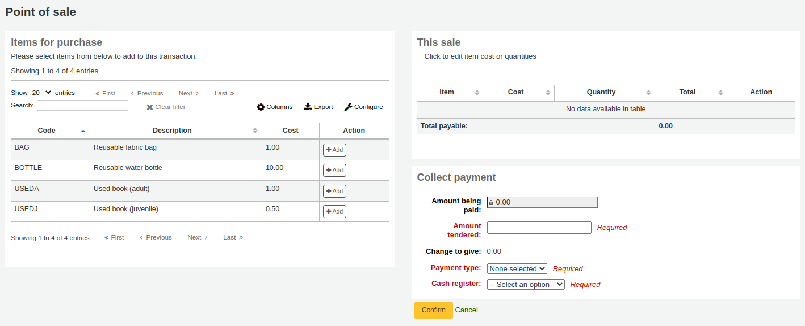
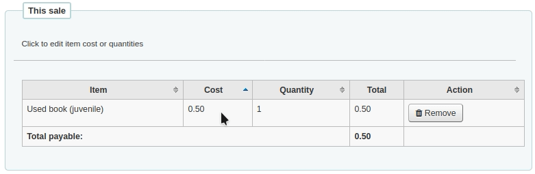
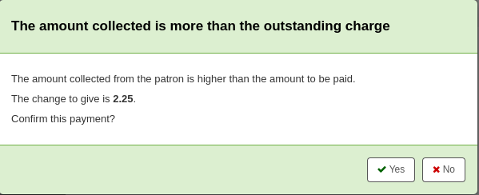
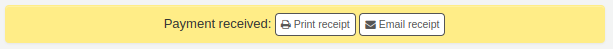

銷售點
銷售點是一個模組，用於將館藏出售給未在圖書館註冊的人或進行不需要連接到讀者帳戶的銷售。
例如，您可以出售舊書或促銷館藏。這些館藏可以出售給任何人而且無需聯繫特定讀者以進行銷售。
對於需要連接到讀者帳戶的發票（例如丟失的館藏或新卡費用），請使用 :ref:`人工發票<creating-manual-invoices-label>。
設定
To enable the point of sale module, you must turn on the EnablePointOfSale system preference.
If it’s not already done, you must also enable the UseCashRegisters system preference.
確認有在管理模組近用 配置現金列表
最後，必須在管理模組 :ref:`借方類型<debit-types-label>`中新增要出售的館藏
進行銷售
首次進入銷售點模組時，左側將顯示所有待售館藏。這些是標記為’可出售’的 :ref:借方類型<debit-types-label>`。
备注
您可以在管理模組的 :ref:`’欄組態’<column-settings-label>`部份, 自定義此表的列(table id: invoices)。
右側是目前的銷售。

點擊館藏旁邊的’新增’按鈕以新增到當前銷售中。
如果需要更改成本或數量，點擊右側的數量，它將變成一個輸入框，並可以在其中輸入正確的數量。

Once all the items have been added, quantities and prices adjusted if needed, fill out the ‘Collect payment’ form.
Amount being paid: this is the total, it cannot be edited since it’s not attached to a patron file, it cannot be partially paid.
Amount tendered: enter the actual amount handed to you by the patron. The amount tendered must be equal or greater than ‘Amoung being paid’.
Change to give: if the amount tendered is greater than the amoung being paid, Koha will calculate how much change should be returned to the patron.
Payment type: choose the type of payment.
备注
The values are managed in the PAYMENT_TYPE authorized value.
Cash register: choose the cash register in which to enter the transaction.
Click ‘Confirm’ to finalize the sale.
If change was to be given back to the patron, a pop-up window will appear to remind you, click ‘Yes’ to confirm that you gave back the correct amount and confirm the payment.

You will have the choice to print or email the receipt for the sale.

备注
The receipts can be customized in the Notices and slips tool. The letter code is RECEIPT.